Note
Hello, welcome to the SunFounder Raspberry Pi & Arduino & ESP32 Enthusiasts Community on Facebook! Dive deeper into Raspberry Pi, Arduino, and ESP32 with fellow enthusiasts.
Why Join?
Expert Support: Solve post-sale issues and technical challenges with help from our community and team.
Learn & Share: Exchange tips and tutorials to enhance your skills.
Exclusive Previews: Get early access to new product announcements and sneak peeks.
Special Discounts: Enjoy exclusive discounts on our newest products.
Festive Promotions and Giveaways: Take part in giveaways and holiday promotions.
👉 Ready to explore and create with us? Click [here] and join today!
3D Printer Monitor
When using a 3D printer, we will need to use OctoPrint. It is an open source 3D printer controller application, which provides a web interface for the connected printers. It displays printers’ status and key parameters and allows user to schedule prints and remotely control the printer.
Please refer to the detailed installation tutorial for OctoPrint: https://community.octoprint.org/t/setting-up-octoprint-on-a-raspberry-pi-running-raspbian-or-raspberry-pi-os/2337.
This tutorial has written very detailed installation steps, which may take a long time and requires more patience.
Note
The Raspberry Pi Operating System will need to be installed on the micro-SD card before starting the tutorial. Please refer to INSTALLING THE OS.
Webcam Option - A camera will need to be installed on this screen for webcam use. Please refer to the tutorial: Assemble the Camera Module.
Touch UI Option - A new Raspberry Pi image might not have an auto start function for Touch UI. Please refer to the tutorial: Touch UI to configure the settings for the Touch UI function.
Touch UI
If the autostart file is not located in the ~/.config/lxsession/LXDE-pi path, the file will need to be added manually.
Create the lxsession folder and the LXDE-pi folder in the ~/config directory.
mkdir ~/.config/lxsession
mkdir ~/.config/lxsession/LXDE-pi
Copy the autostart file from the path /etc/xdg/lxsession/LXDE-pi to the ~/.config/lxsession/LXDE-pi folder.
cp /etc/xdg/lxsession/LXDE-pi/autostart ~/.config/lxsession/LXDE-pi/autostart
Set the permissions of the autostart file to be readable and writable.
chmod 644 ~/.config/lxsession/LXDE-pi/autostart
nano .config/lxsession/LXDE-pi/autostart
Open the autostart file with a text editor such as Nano, and add the following line to the end of the file to make the Raspberry Pi execute the startTouchUI.sh script file on boot.
@/home/pi/startTouchUI.sh
After restarting the Raspberry Pi, the OctoPrint’s Touch UI will open in full screen mode. Press F11 to exit the full screen mode and enter the desktop.
Make a 3D Model
Click this link: https://projects.raspberrypi.org/en/projects?hardware%5B%5D=3d-printer, refer to the official Raspberry Pi tutorial, you can get the 3D model file in the format of .stl.
Generally, 3D printers cannot directly process .stl files. You need to use Ultimaker Cura software to slice them, and then upload them to the 3D printer through OctoPrint to print the 3D model file.
Download Ultimaker Cura. Since Ultimaker Cura is not available on the Raspberry Pi system, you need to perform the slicing operation on your computer.
{kind=link}
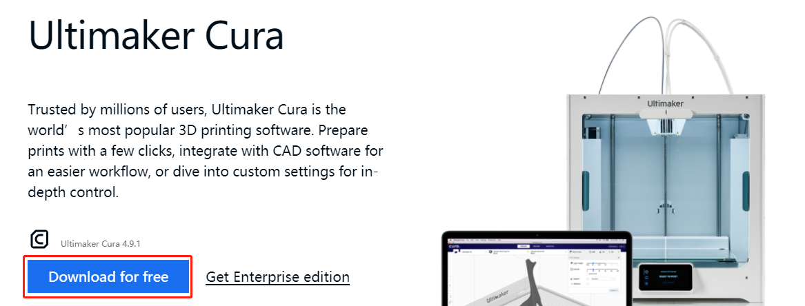
Select the version you need.
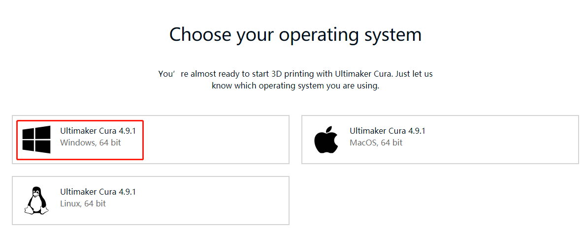
When installing Ultimaker Cura, please note that in the choose components step, Open STL files with Cura has been checked by default, so that .stl files can be sliced.
If you want to slice other types of model files, check the corresponding option, otherwise you can install it directly.
{kind=link}
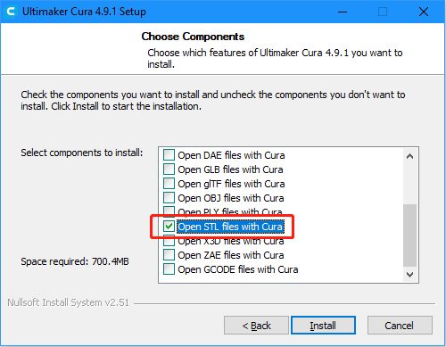
When opening Ultimaker Cura for the first time, there will be a series of configuration prompts. At the Add a Printer step, select the model of printer used and click Next.
{kind=link}
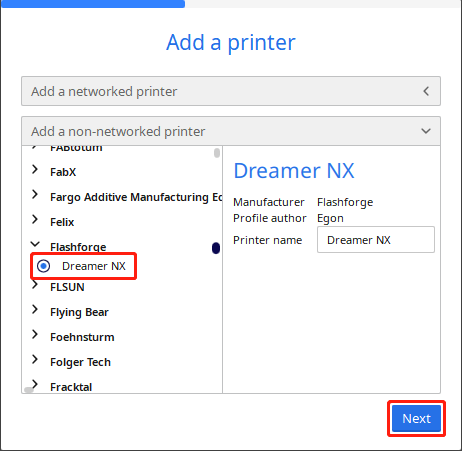
After selecting the correct printer model, verify that the parameters provided by Ultimaker Cura in the Machine Settings page are correct, or change the parameters directly.
Follow the onscreen prompts to complete the configuration of Ultimaker Cura.
{kind=link}
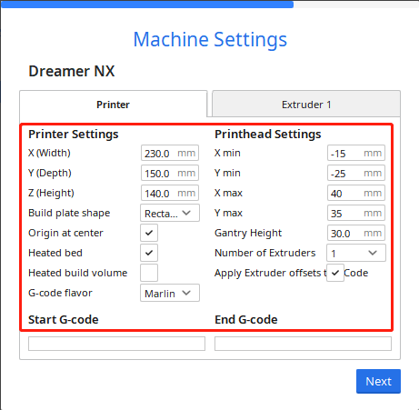
Once Ultimaker Cura has successfully launched, click the Folder icon in the upper left-hand corner and browse to the folder with the .stl 3D model file that needs to be sliced, and click Open to add the .stl file to Ultimaker Cura’s library.
{kind=link}
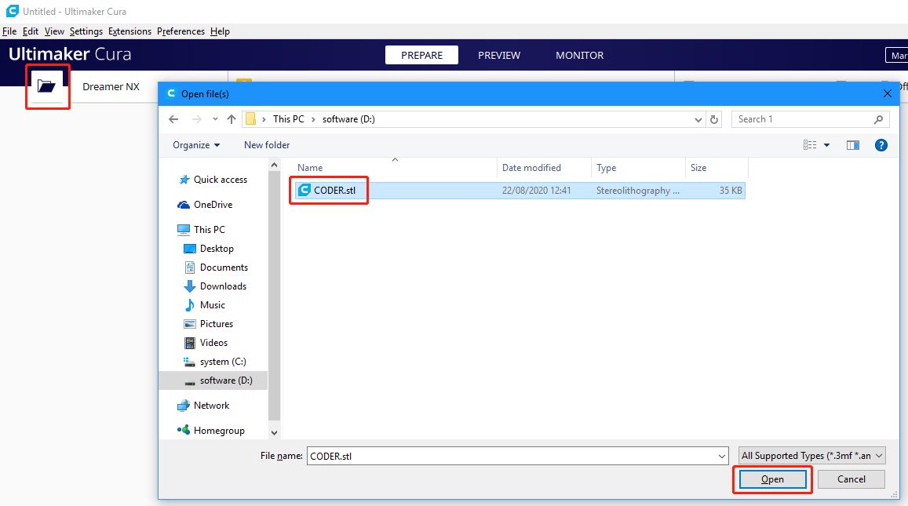
After the file has been added, click the Slice option in the lower right-hand corner, and Ultimaker Cura will automatically perform the slicing operation.
{kind=link}
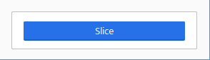
After slicing is complete, click the Save to Disk option in the lower right corner to save the sliced file locally.
{kind=link}
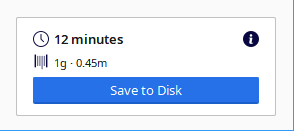
Select the type of file extension recognized by the 3D printer, then click Save.
{kind=link}
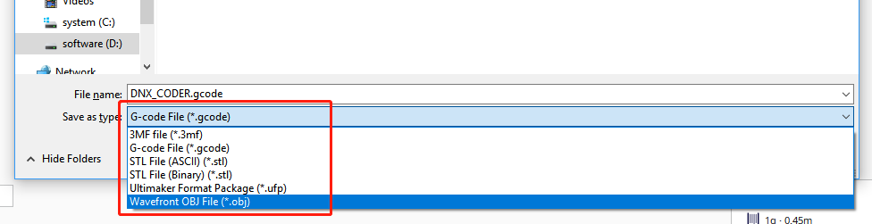
Print 3D Model
After the .stl file has been sliced, the 3D model file can be sent to the 3D printer through OctoPrint to be printed.
Open the Raspberry Pi’s browser, and enter http://192.168.18.179/?#temp to log in to OctoPrint.
Note
Before logging in to the OctoPrint’s web UI, OctoPrint will first need to have been successfully installed on the Raspberry Pi.
The IP address 192.168.18.179 will need to be replaced with the local IP address of the Raspberry Pi. Hover the cursor over the WiFi icon on the Raspberry Pi desktop, and the local IP address will be displayed.
{kind=link}
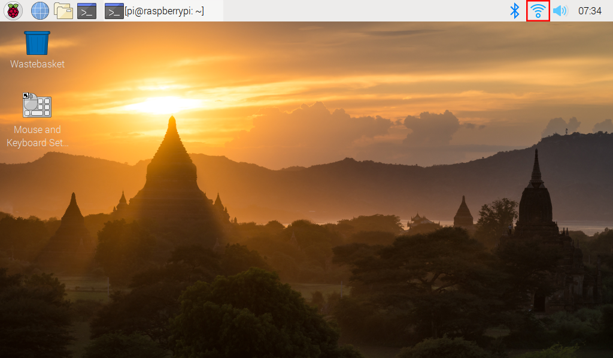
Now you have entered OctoPrint.
{kind=link}
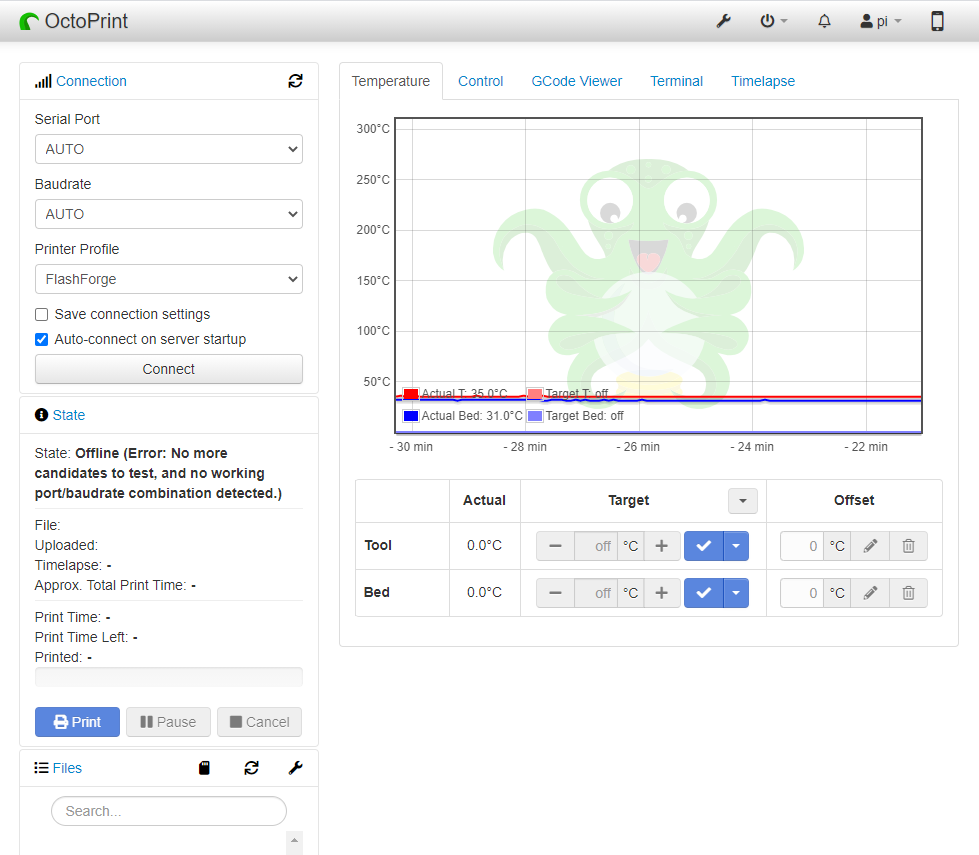
Click the Upload option to select the sliced 3D model file.
{kind=link}
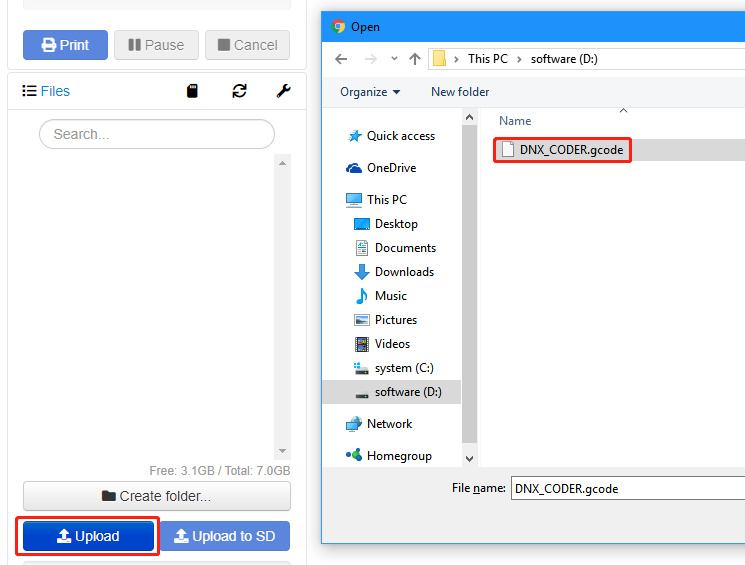
Click the print icon. The 3D printer will start to print the 3D model file after the slicing process is complete.
{kind=link}
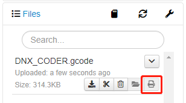
If you have transferred the sliced file to the Raspberry Pi, you can also open the OctoPrint UI in Raspberry Pi to print.
{kind=link}
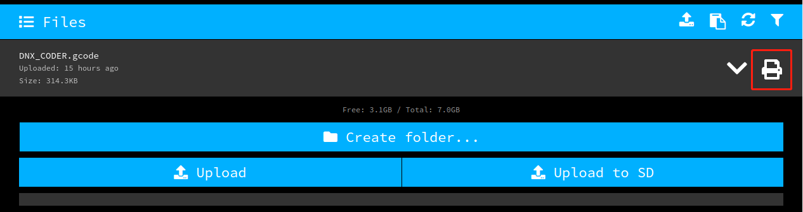
Video
The following video shows that after installing OctoPrint, connect your 3D printer and this screen through a USB cable，upload the designed 3D file, and then use the camera to monitor the printing process.
The temperature can also be monitored to prevent the 3D printer from getting too hot or cold, which will affect the printed 3D model.